Risky + Safe Asset (Saving Only) Interpolated-Percentage (Loop)
back to Fan's Dynamic Assets Repository Table of Content.
Contents
- FF_IPWKZ_VF solve infinite horizon exo shock + endo asset problem
- Default
- Parse Parameters 1
- Parse Parameters 2
- Initialize Output Matrixes
- Initialize Convergence Conditions
- Pre-calculate u(c)
- Iterate Value Function
- Interpolate (1) reacahble v(coh(k(w,z),b(w,z),z),z) given v(coh, z)
- Solve Second Stage Problem k*(w,z)
- Solve First Stage Problem w*(z) given k*(w,z)
- Check Tolerance and Continuation
- Process Optimal Choices
function result_map = ff_ipwkz_vf(varargin)
FF_IPWKZ_VF solve infinite horizon exo shock + endo asset problem
This program solves the infinite horizon dynamic savings and risky capital asset problem. This is the two step solution with interpolation and with percentage asset grids version of ff_akz_vf. See ff_wkz_vf for details about the second stage. See ff_iwkz_vf for details about interpolation over u(c) and value(coh,z). The new ingredient here is the use of percentage choice grid rather than level choice grid. This is the looped code.
@param param_map container parameter container
@param support_map container support container
@param armt_map container container with states, choices and shocks grids that are inputs for grid based solution algorithm
@param func_map container container with function handles for consumption cash-on-hand etc.
@return result_map container contains policy function matrix, value function matrix, iteration results, and policy function, value function and iteration results tables.
keys included in result_map:
- mt_val matrix states_n by shock_n matrix of converged value function grid
- mt_pol_a matrix states_n by shock_n matrix of converged policy function grid
- ar_val_diff_norm array if bl_post = true it_iter_last by 1 val function difference between iteration
- ar_pol_diff_norm array if bl_post = true it_iter_last by 1 policy function difference between iterations
- mt_pol_perc_change matrix if bl_post = true it_iter_last by shock_n the proportion of grid points at which policy function changed between current and last iteration for each element of shock
@example
@include
Default
- it_param_set = 1: quick test
- it_param_set = 2: benchmark run
- it_param_set = 3: benchmark profile
- it_param_set = 4: press publish button
it_param_set = 4; bl_input_override = true; [param_map, support_map] = ffs_ipwkz_set_default_param(it_param_set); % parameters can be set inside ffs_ipwkz_set_default_param or updated here param_map('it_w_perc_n') = 10; % param_map('it_ak_perc_n') = param_map('it_w_perc_n'); param_map('it_z_n') = 5; % param_map('fl_coh_interp_grid_gap') = 0.025; % param_map('it_c_interp_grid_gap') = 0.001; % param_map('fl_w_interp_grid_gap') = 0.25; % param_map('it_w_perc_n') = 100; % param_map('it_ak_perc_n') = param_map('it_w_perc_n'); % param_map('it_z_n') = 11; param_map('fl_coh_interp_grid_gap') = 0.5; % param_map('it_c_interp_grid_gap') = 10^-4; param_map('fl_w_interp_grid_gap') = 0.5; % get armt and func map [armt_map, func_map] = ffs_ipwkz_get_funcgrid(param_map, support_map, bl_input_override); % 1 for override default_params = {param_map support_map armt_map func_map};
Parse Parameters 1
% if varargin only has param_map and support_map, params_len = length(varargin); [default_params{1:params_len}] = varargin{:}; param_map = [param_map; default_params{1}]; support_map = [support_map; default_params{2}]; if params_len >= 1 && params_len <= 2 % If override param_map, re-generate armt and func if they are not % provided bl_input_override = true; [armt_map, func_map] = ffs_ipwkz_get_funcgrid(param_map, support_map, bl_input_override); else % Override all armt_map = [armt_map; default_params{3}]; func_map = [func_map; default_params{4}]; end % append function name st_func_name = 'ff_ipwkz_vf'; support_map('st_profile_name_main') = [st_func_name support_map('st_profile_name_main')]; support_map('st_mat_name_main') = [st_func_name support_map('st_mat_name_main')]; support_map('st_img_name_main') = [st_func_name support_map('st_img_name_main')];
Parse Parameters 2
% armt_map params_group = values(armt_map, {'ar_w_perc', 'ar_w_level', 'ar_z'}); [ar_w_perc, ar_w_level, ar_z] = params_group{:}; params_group = values(armt_map, {'ar_interp_c_grid', 'ar_interp_coh_grid', ... 'mt_interp_coh_grid_mesh_z', 'mt_z_mesh_coh_interp_grid',... 'mt_w_by_interp_coh_interp_grid'}); [ar_interp_c_grid, ar_interp_coh_grid, ... mt_interp_coh_grid_mesh_z, mt_z_mesh_coh_interp_grid, ... mt_w_by_interp_coh_interp_grid] = params_group{:}; params_group = values(armt_map, {'mt_coh_wkb', 'mt_z_mesh_coh_wkb'}); [mt_coh_wkb, mt_z_mesh_coh_wkb] = params_group{:}; % func_map params_group = values(func_map, {'f_util_log', 'f_util_crra', 'f_cons'}); [f_util_log, f_util_crra, f_cons] = params_group{:}; % param_map params_group = values(param_map, {'it_z_n', 'fl_crra', 'fl_beta', 'fl_c_min'}); [it_z_n, fl_crra, fl_beta, fl_c_min] = params_group{:}; params_group = values(param_map, {'it_maxiter_val', 'fl_tol_val', 'fl_tol_pol', 'it_tol_pol_nochange'}); [it_maxiter_val, fl_tol_val, fl_tol_pol, it_tol_pol_nochange] = params_group{:}; % support_map params_group = values(support_map, {'bl_profile', 'st_profile_path', ... 'st_profile_prefix', 'st_profile_name_main', 'st_profile_suffix',... 'bl_time', 'bl_graph_evf', 'bl_display', 'it_display_every', 'bl_post'}); [bl_profile, st_profile_path, ... st_profile_prefix, st_profile_name_main, st_profile_suffix, ... bl_time, bl_graph_evf, bl_display, it_display_every, bl_post] = params_group{:};
Initialize Output Matrixes
mt_val_cur = zeros(length(ar_interp_coh_grid),length(ar_z)); mt_val = mt_val_cur - 1; mt_pol_a = zeros(length(ar_interp_coh_grid),length(ar_z)); mt_pol_a_cur = mt_pol_a - 1; mt_pol_k = zeros(length(ar_interp_coh_grid),length(ar_z)); mt_pol_k_cur = mt_pol_k - 1;
Initialize Convergence Conditions
bl_vfi_continue = true; it_iter = 0; ar_val_diff_norm = zeros([it_maxiter_val, 1]); ar_pol_diff_norm = zeros([it_maxiter_val, 1]); mt_pol_perc_change = zeros([it_maxiter_val, it_z_n]);
Pre-calculate u(c)
Interpolation, see fs_u_c_partrepeat_main for why interpolate over u(c)
% Evaluate if (fl_crra == 1) ar_interp_u_of_c_grid = f_util_log(ar_interp_c_grid); fl_u_neg_c = f_util_log(fl_c_min); else ar_interp_u_of_c_grid = f_util_crra(ar_interp_c_grid); fl_u_neg_c = f_util_crra(fl_c_min); end ar_interp_u_of_c_grid(ar_interp_c_grid <= fl_c_min) = fl_u_neg_c; % Get Interpolant f_grid_interpolant_spln = griddedInterpolant(ar_interp_c_grid, ar_interp_u_of_c_grid, 'spline');
Iterate Value Function
Loop solution with 4 nested loops
- loop 1: over exogenous states
- loop 2: over endogenous states
- loop 3: over choices
- loop 4: add future utility, integration--loop over future shocks
% Start Profile if (bl_profile) close all; profile off; profile on; end % Start Timer if (bl_time) tic; end % Value Function Iteration while bl_vfi_continue
it_iter = it_iter + 1;
Interpolate (1) reacahble v(coh(k(w,z),b(w,z),z),z) given v(coh, z)
v(coh,z) solved on ar_interp_coh_grid, ar_z grids, see ffs_ipwkz_get_funcgrid.m. Generate interpolant based on that, Then interpolate for the coh reachable levels given the k(w,z) percentage choice grids in the second stage of the problem
% Generate Interpolant for v(coh,z) f_grid_interpolant_value = griddedInterpolant(... mt_z_mesh_coh_interp_grid', mt_interp_coh_grid_mesh_z', mt_val_cur', 'linear', 'nearest'); % Interpoalte for v(coh(k(w,z),b(w,z),z),z) mt_val_wkb_interpolated = f_grid_interpolant_value(mt_z_mesh_coh_wkb, mt_coh_wkb);
Solve Second Stage Problem k*(w,z)
This is the key difference between this function and ffs_akz_set_functions which solves the two stages jointly Interpolation first, because solution coh grid is not the same as all points reachable by k and b choices given w.
support_map('bl_graph_evf') = false; if (it_iter == (it_maxiter_val + 1)) support_map('bl_graph_evf') = bl_graph_evf; end bl_input_override = true; [mt_ev_condi_z_max, ~, mt_ev_condi_z_max_kp, ~] = ... ff_ipwkz_evf(mt_val_wkb_interpolated, param_map, support_map, armt_map, bl_input_override);
Solve First Stage Problem w*(z) given k*(w,z)
loop 1: over exogenous states
for it_z_i = 1:length(ar_z) % Get 2nd Stage Arrays ar_ev_condi_z_max_z = mt_ev_condi_z_max(:, it_z_i); ar_w_level_kstar_z = mt_ev_condi_z_max_kp(:, it_z_i); % Interpolant (2) k*(ar_w_perc) from k*(ar_w_level,z) % There are two w=k'+b' arrays. ar_w_level is the level even grid based % on which we solve the 2nd stage problem in ff_ipwkz_evf.m. Here for % each coh level, we have a different vector of w levels, but the same % vector of percentage ws. So we need to interpolate to get the optimal % k* and b* choices at each percentage level of w. f_interpolante_w_level_kstar_z = griddedInterpolant(ar_w_level, ar_w_level_kstar_z', 'linear', 'nearest'); % Interpolant for (3) EV(k*(ar_w_perc),Z) f_interpolante_ev_condi_z_max_z = griddedInterpolant(ar_w_level, ar_ev_condi_z_max_z', 'linear', 'nearest'); % loop 2: over endogenous states for it_coh_interp_j = 1:length(ar_interp_coh_grid) % Get cash-on-hand which include k,b,z fl_coh = mt_interp_coh_grid_mesh_z(it_coh_interp_j, it_z_i); % loop 3: over choices, only w vector % we choose w(z), know from ff_wkz_evf k*(w,z), b*=w-k* % fl_w_level_perc_z is the level of w given coh and z based on % the w percentage grid generated in ffs_akz_get_funcgrid.m ar_val_cur = zeros(size(ar_w_perc)); ar_w_kstar_z = zeros(size(ar_w_perc)); ar_w_astar_z = zeros(size(ar_w_perc)); for it_cohp_k = 1:length(ar_w_perc) % Interpolate (2) to get optimal k at current percentage grid % level given coh and z fl_w_level_perc_z = mt_w_by_interp_coh_interp_grid(it_cohp_k, it_coh_interp_j); fl_w_kstar_interp_z = f_interpolante_w_level_kstar_z(fl_w_level_perc_z); fl_w_astar_interp_z = fl_w_level_perc_z - fl_w_kstar_interp_z; % store optimal interpolated k and a choices given w ar_w_kstar_z(it_cohp_k) = fl_w_kstar_interp_z; ar_w_astar_z(it_cohp_k) = fl_w_astar_interp_z; % consumption fl_c = f_cons(fl_coh, fl_w_astar_interp_z, fl_w_kstar_interp_z); % Interpolate (3) EV(k*(ar_w_perc),Z) fl_ev_condi_z_max_interp_z = f_interpolante_ev_condi_z_max_z(fl_w_level_perc_z); % Interpolate (4) consumption ar_val_cur(it_cohp_k) = f_grid_interpolant_spln(fl_c) + fl_beta*fl_ev_condi_z_max_interp_z; % Replace if negative consumption if fl_c <= 0 ar_val_cur(it_cohp_k) = fl_u_neg_c; end end % maximization over loop 3 choices for loop 1+2 states it_max_lin_idx = find(ar_val_cur == max(ar_val_cur)); mt_val(it_coh_interp_j,it_z_i) = ar_val_cur(it_max_lin_idx(1)); mt_pol_a(it_coh_interp_j,it_z_i) = ar_w_astar_z(it_max_lin_idx(1)); mt_pol_k(it_coh_interp_j,it_z_i) = ar_w_kstar_z(it_max_lin_idx(1)); end end
Check Tolerance and Continuation
% Difference across iterations ar_val_diff_norm(it_iter) = norm(mt_val - mt_val_cur); ar_pol_diff_norm(it_iter) = norm(mt_pol_a - mt_pol_a_cur) + norm(mt_pol_k - mt_pol_k_cur); ar_pol_a_perc_change = sum((mt_pol_a ~= mt_pol_a_cur))/length(ar_interp_coh_grid); ar_pol_k_perc_change = sum((mt_pol_k ~= mt_pol_k_cur))/length(ar_interp_coh_grid); mt_pol_perc_change(it_iter, :) = mean([ar_pol_a_perc_change;ar_pol_k_perc_change]); % Update mt_val_cur = mt_val; mt_pol_a_cur = mt_pol_a; mt_pol_k_cur = mt_pol_k; % Print Iteration Results if (bl_display && (rem(it_iter, it_display_every)==0)) fprintf('VAL it_iter:%d, fl_diff:%d, fl_diff_pol:%d\n', ... it_iter, ar_val_diff_norm(it_iter), ar_pol_diff_norm(it_iter)); tb_valpol_iter = array2table([mean(mt_val_cur,1);... mean(mt_pol_a_cur,1); ... mean(mt_pol_k_cur,1); ... mt_val_cur(length(ar_interp_coh_grid),:); ... mt_pol_a_cur(length(ar_interp_coh_grid),:); ... mt_pol_k_cur(length(ar_interp_coh_grid),:)]); tb_valpol_iter.Properties.VariableNames = strcat('z', string((1:size(mt_val_cur,2)))); tb_valpol_iter.Properties.RowNames = {'mval', 'map', 'mak', 'Hval', 'Hap', 'Hak'}; disp('mval = mean(mt_val_cur,1), average value over a') disp('map = mean(mt_pol_a_cur,1), average choice over a') disp('mkp = mean(mt_pol_k_cur,1), average choice over k') disp('Hval = mt_val_cur(ar_interp_coh_grid,:), highest a state val') disp('Hap = mt_pol_a_cur(ar_interp_coh_grid,:), highest a state choice') disp('mak = mt_pol_k_cur(ar_interp_coh_grid,:), highest k state choice') disp(tb_valpol_iter); end % Continuation Conditions: % 1. if value function convergence criteria reached % 2. if policy function variation over iterations is less than % threshold if (it_iter == (it_maxiter_val + 1)) bl_vfi_continue = false; elseif ((it_iter == it_maxiter_val) || ... (ar_val_diff_norm(it_iter) < fl_tol_val) || ... (sum(ar_pol_diff_norm(max(1, it_iter-it_tol_pol_nochange):it_iter)) < fl_tol_pol)) % Fix to max, run again to save results if needed it_iter_last = it_iter; it_iter = it_maxiter_val; end
end % End Timer if (bl_time) toc; end % End Profile if (bl_profile) profile off profile viewer st_file_name = [st_profile_prefix st_profile_name_main st_profile_suffix]; profsave(profile('info'), strcat(st_profile_path, st_file_name)); end
Process Optimal Choices
result_map = containers.Map('KeyType','char', 'ValueType','any'); result_map('mt_val') = mt_val; result_map('cl_mt_pol_coh') = {mt_interp_coh_grid_mesh_z, zeros(1)}; result_map('cl_mt_pol_a') = {mt_pol_a, zeros(1)}; result_map('cl_mt_pol_k') = {mt_pol_k, zeros(1)}; result_map('cl_mt_pol_c') = {f_cons(mt_interp_coh_grid_mesh_z, mt_pol_a, mt_pol_k), zeros(1)}; result_map('cl_mt_val') = {mt_val, zeros(1)}; result_map('ar_st_pol_names') = ["cl_mt_val", "cl_mt_coh", "cl_mt_pol_a", "cl_mt_pol_k", "cl_mt_pol_c"]; if (bl_post) bl_input_override = true; result_map('ar_val_diff_norm') = ar_val_diff_norm(1:it_iter_last); result_map('ar_pol_diff_norm') = ar_pol_diff_norm(1:it_iter_last); result_map('mt_pol_perc_change') = mt_pol_perc_change(1:it_iter_last, :); % graphing based on coh_wkb, but that does not match optimal choice % matrixes for graphs. armt_map('mt_coh_wkb') = mt_interp_coh_grid_mesh_z; armt_map('it_ameshk_n') = length(ar_interp_coh_grid); armt_map('ar_a_meshk') = mt_interp_coh_grid_mesh_z(:,1); armt_map('ar_k_mesha') = zeros(size(mt_interp_coh_grid_mesh_z(:,1)) + 0); result_map = ff_akz_vf_post(param_map, support_map, armt_map, func_map, result_map, bl_input_override); end
valgap = norm(mt_val - mt_val_cur): value function difference across iterations
polgap = norm(mt_pol_a - mt_pol_a_cur): policy function difference across iterations
z1 = z1 perc change: (sum((mt_pol_a ~= mt_pol_a_cur))+sum((mt_pol_k ~= mt_pol_k_cur)))/(2*it_ameshk_n):percentage of state space points conditional on shock where the policy function is changing across iterations
valgap polgap z1 z2 z3 z4 z5
________ _______ _________ _________ _________ _________ _________
iter=1 36.785 48.226 1 1 1 1 1
iter=2 28.476 415.77 1 1 1 1 1
iter=3 23.711 171.52 0.99115 1 1 0.99115 0.9823
iter=4 20.295 54.506 0.30088 0.27434 0.42478 0.70796 0.81416
iter=5 17.619 80.014 0.87611 0.76106 0.70796 0.49558 0.31858
iter=6 15.522 34.407 0.10619 0.17699 0.25664 0.26549 0.49558
iter=7 13.719 15.718 0.053097 0.097345 0.15929 0.15044 0.28319
iter=8 12.137 9.5078 0.044248 0.10619 0.10619 0.11504 0.18584
iter=9 10.761 40.481 0.33628 0.21239 0.061947 0.035398 0.088496
iter=10 9.6255 32.789 0.19469 0.26549 0.25664 0.035398 0.088496
iter=11 8.6679 26.369 0.088496 0.15929 0.19469 0.16814 0.026549
iter=12 7.843 22.292 0.044248 0.070796 0.10619 0.15044 0.070796
iter=13 7.1292 23.6 0.035398 0.035398 0.061947 0.14159 0.18584
iter=14 6.508 25.163 0.017699 0.026549 0.079646 0.070796 0.18584
iter=15 5.9561 16.667 0.017699 0.017699 0.026549 0.061947 0.17699
iter=16 5.4615 11.302 0.0088496 0.053097 0.044248 0.035398 0.19469
iter=17 5.0153 10.162 0.0088496 0.0088496 0.017699 0.070796 0.079646
iter=18 4.6109 7.9175 0.053097 0.0088496 0.0088496 0.044248 0.035398
iter=19 4.2426 7.1609 0.017699 0.035398 0.044248 0.026549 0.044248
iter=20 3.9074 6.8297 0.0088496 0 0.053097 0.026549 0.035398
iter=21 3.6019 5.4418 0 0.044248 0 0.053097 0.026549
iter=22 3.3224 4.8527 0 0 0.026549 0.035398 0.017699
iter=23 3.067 4.6338 0 0.017699 0 0.026549 0.017699
iter=24 2.8333 3.2733 0.0088496 0.0088496 0 0.017699 0.0088496
iter=25 2.619 3.6959 0 0.044248 0.026549 0.017699 0.0088496
iter=26 2.423 3.7483 0 0 0.0088496 0 0.017699
iter=27 2.243 3.8526 0 0 0 0.0088496 0.061947
iter=28 2.078 2.965 0 0 0 0 0.0088496
iter=29 1.9261 3.729 0 0 0 0.0088496 0.0088496
iter=30 1.7869 0 0 0 0 0 0
iter=31 1.6586 2.8528 0 0 0 0 0.0088496
iter=32 1.5407 3.064 0 0 0.017699 0.0088496 0
iter=33 1.4322 0 0 0 0 0 0
iter=34 1.332 3.1215 0 0 0 0.017699 0.026549
iter=35 1.2396 2.7967 0.017699 0 0 0 0.0088496
iter=36 1.1543 1.4383 0 0 0 0.017699 0
iter=37 1.0755 2.0678 0 0.0088496 0 0 0
iter=38 1.0026 2.7407 0 0 0 0.0088496 0
iter=39 0.9352 0 0 0 0 0 0
iter=40 0.87267 0 0 0 0 0 0
iter=41 0.81473 2.7407 0 0 0 0 0.0088496
iter=42 0.76099 0.77814 0 0 0.0088496 0 0
iter=43 0.71108 0 0 0 0 0 0
iter=44 0.66469 2.4603 0 0 0.0088496 0 0
iter=45 0.62156 0 0 0 0 0 0
iter=46 0.58142 0 0 0 0 0 0
iter=47 0.54404 0 0 0 0 0 0
iter=48 0.50922 0.67299 0 0 0 0.017699 0
iter=49 0.47677 0 0 0 0 0 0
iter=50 0.4465 0 0 0 0 0 0
iter=51 0.41825 0 0 0 0 0 0
iter=52 0.39189 0 0 0 0 0 0
iter=53 0.36726 0 0 0 0 0 0
iter=54 0.34426 0 0 0 0 0 0
iter=55 0.32275 0 0 0 0 0 0
iter=56 0.30265 0 0 0 0 0 0
iter=57 0.28384 0 0 0 0 0 0
iter=58 0.26624 0 0 0 0 0 0
iter=59 0.24977 0 0 0 0 0 0
iter=60 0.23434 0 0 0 0 0 0
iter=61 0.2199 0 0 0 0 0 0
iter=62 0.20638 0 0 0 0 0 0
iter=63 0.1937 0 0 0 0 0 0
iter=64 0.18182 0 0 0 0 0 0
iter=65 0.17069 0 0 0 0 0 0
iter=66 0.16026 0 0 0 0 0 0
iter=67 0.15047 0 0 0 0 0 0
iter=68 0.1413 0 0 0 0 0 0
iter=69 0.13269 0 0 0 0 0 0
iter=70 0.12461 0 0 0 0 0 0
iter=71 0.11704 0 0 0 0 0 0
iter=72 0.10993 0 0 0 0 0 0
iter=73 0.10326 0 0 0 0 0 0
iter=74 0.097002 0 0 0 0 0 0
tb_val: V(a,z) value at each state space point
z1_0_33942 z2_0_5596 z3_0_92263 z4_1_5212 z5_2_508
__________ _________ __________ _________ ________
coh1:k=0.443648,b=0 -2.913 -2.0124 -0.93716 0.28775 1.4726
coh2:k=0.94931,b=0 0.44426 1.6556 3.0788 4.6197 6.1208
coh3:k=1.45497,b=0 1.5724 2.7463 4.1182 5.6359 7.1183
coh4:k=1.96063,b=0 2.4036 3.5388 4.8476 6.2841 7.7011
coh5:k=2.4663,b=0 3.0225 4.0892 5.3756 6.775 8.1614
coh6:k=2.97196,b=0 3.5759 4.6099 5.8288 7.1796 8.5373
coh7:k=3.47762,b=0 4.0345 5.035 6.2232 7.5197 8.8506
coh8:k=3.98328,b=0 4.4408 5.4084 6.5676 7.8311 9.1147
coh9:k=4.48894,b=0 4.8005 5.7374 6.8684 8.1052 9.36
coh10:k=4.99461,b=0 5.1173 6.0241 7.1282 8.343 9.5829
coh11:k=5.50027,b=0 5.431 6.2863 7.3658 8.5605 9.7865
coh12:k=6.00593,b=0 5.7231 6.5248 7.5828 8.7596 9.9723
coh13:k=6.51159,b=0 5.997 6.7626 7.7791 8.9433 10.143
coh14:k=7.01725,b=0 6.254 6.9941 7.964 9.1185 10.306
coh15:k=7.52291,b=0 6.4975 7.2172 8.1675 9.2935 10.462
coh16:k=8.02858,b=0 6.7288 7.4311 8.3624 9.4705 10.607
coh17:k=8.53424,b=0 6.9492 7.6356 8.5475 9.637 10.745
coh18:k=9.0399,b=0 7.1586 7.8302 8.7227 9.7933 10.877
coh19:k=9.54556,b=0 7.3575 8.0148 8.8882 9.9403 11.008
coh20:k=10.0512,b=0 7.5478 8.1913 9.046 10.08 11.132
coh21:k=10.5569,b=0 7.7299 8.3601 9.197 10.213 11.25
coh22:k=11.0625,b=0 7.9043 8.5219 9.3417 10.339 11.363
coh23:k=11.5682,b=0 8.0703 8.6759 9.4796 10.46 11.469
coh24:k=12.0739,b=0 8.23 8.8241 9.612 10.575 11.571
coh25:k=12.5795,b=0 8.3839 8.9667 9.7394 10.686 11.669
coh26:k=13.0852,b=0 8.5322 9.104 9.8623 10.792 11.764
coh27:k=13.5909,b=0 8.6743 9.236 9.9805 10.895 11.854
coh28:k=14.0965,b=0 8.811 9.3629 10.094 10.993 11.941
coh29:k=14.6022,b=0 8.9434 9.4859 10.204 11.088 12.025
coh30:k=15.1078,b=0 9.0718 9.6051 10.311 11.18 12.107
coh31:k=15.6135,b=0 9.1962 9.7205 10.415 11.269 12.185
coh32:k=16.1192,b=0 9.3155 9.8314 10.514 11.355 12.262
coh33:k=16.6248,b=0 9.4386 9.9391 10.611 11.439 12.335
coh34:k=17.1305,b=0 9.5592 10.044 10.706 11.521 12.407
coh35:k=17.6362,b=0 9.6791 10.146 10.798 11.6 12.477
coh36:k=18.1418,b=0 9.7961 10.245 10.887 11.678 12.545
coh37:k=18.6475,b=0 9.9108 10.342 10.973 11.753 12.611
coh38:k=19.1531,b=0 10.023 10.442 11.057 11.827 12.676
coh39:k=19.6588,b=0 10.133 10.542 11.14 11.899 12.739
coh40:k=20.1645,b=0 10.242 10.641 11.221 11.969 12.801
coh41:k=20.6701,b=0 10.349 10.74 11.299 12.037 12.862
coh42:k=21.1758,b=0 10.455 10.836 11.375 12.104 12.922
coh43:k=21.6814,b=0 10.56 10.932 11.45 12.17 12.98
coh44:k=22.1871,b=0 10.662 11.025 11.523 12.234 13.039
coh45:k=22.6928,b=0 10.763 11.117 11.602 12.297 13.097
coh46:k=23.1984,b=0 10.862 11.209 11.683 12.359 13.155
coh47:k=23.7041,b=0 10.96 11.299 11.765 12.419 13.215
coh48:k=24.2098,b=0 11.056 11.389 11.848 12.479 13.277
coh49:k=24.7154,b=0 11.15 11.478 11.932 12.558 13.347
coh50:k=25.2211,b=0 11.243 11.566 12.016 12.639 13.42
coh64:k=32.3003,b=0 12.423 12.704 13.105 13.654 14.332
coh65:k=32.806,b=0 12.499 12.778 13.175 13.719 14.39
coh66:k=33.3117,b=0 12.574 12.851 13.245 13.783 14.448
coh67:k=33.8173,b=0 12.648 12.923 13.313 13.846 14.505
coh68:k=34.323,b=0 12.722 12.994 13.381 13.908 14.561
coh69:k=34.8287,b=0 12.794 13.064 13.447 13.97 14.616
coh70:k=35.3343,b=0 12.865 13.133 13.513 14.031 14.671
coh71:k=35.84,b=0 12.936 13.201 13.578 14.091 14.724
coh72:k=36.3456,b=0 13.005 13.269 13.642 14.15 14.778
coh73:k=36.8513,b=0 13.074 13.335 13.705 14.208 14.83
coh74:k=37.357,b=0 13.142 13.401 13.767 14.266 14.882
coh75:k=37.8626,b=0 13.209 13.465 13.829 14.323 14.933
coh76:k=38.3683,b=0 13.275 13.529 13.89 14.379 14.984
coh77:k=38.874,b=0 13.34 13.593 13.95 14.435 15.034
coh78:k=39.3796,b=0 13.405 13.655 14.009 14.489 15.083
coh79:k=39.8853,b=0 13.468 13.716 14.067 14.544 15.132
coh80:k=40.3909,b=0 13.531 13.777 14.125 14.597 15.18
coh81:k=40.8966,b=0 13.593 13.837 14.182 14.65 15.228
coh82:k=41.4023,b=0 13.655 13.897 14.239 14.702 15.275
coh83:k=41.9079,b=0 13.715 13.955 14.294 14.754 15.322
coh84:k=42.4136,b=0 13.775 14.013 14.349 14.805 15.368
coh85:k=42.9192,b=0 13.834 14.071 14.404 14.855 15.413
coh86:k=43.4249,b=0 13.893 14.127 14.458 14.905 15.458
coh87:k=43.9306,b=0 13.951 14.183 14.511 14.955 15.503
coh88:k=44.4362,b=0 14.008 14.239 14.563 15.003 15.547
coh89:k=44.9419,b=0 14.064 14.293 14.615 15.051 15.591
coh90:k=45.4476,b=0 14.12 14.347 14.666 15.099 15.634
coh91:k=45.9532,b=0 14.176 14.401 14.717 15.146 15.677
coh92:k=46.4589,b=0 14.23 14.453 14.767 15.193 15.719
coh93:k=46.9645,b=0 14.284 14.506 14.817 15.239 15.761
coh94:k=47.4702,b=0 14.338 14.557 14.866 15.285 15.802
coh95:k=47.9759,b=0 14.39 14.608 14.915 15.33 15.843
coh96:k=48.4815,b=0 14.443 14.659 14.963 15.375 15.883
coh97:k=48.9872,b=0 14.494 14.709 15.01 15.419 15.923
coh98:k=49.4929,b=0 14.545 14.758 15.057 15.463 15.963
coh99:k=49.9985,b=0 14.596 14.807 15.104 15.506 16.002
coh100:k=50.5042,b=0 14.646 14.855 15.15 15.549 16.041
coh101:k=51.0098,b=0 14.695 14.903 15.196 15.591 16.079
coh102:k=51.5155,b=0 14.744 14.951 15.241 15.633 16.117
coh103:k=52.0212,b=0 14.793 14.998 15.285 15.675 16.154
coh104:k=52.5268,b=0 14.841 15.044 15.33 15.716 16.19
coh105:k=53.0325,b=0 14.888 15.09 15.373 15.757 16.226
coh106:k=53.5381,b=0 14.935 15.135 15.417 15.797 16.261
coh107:k=54.0438,b=0 14.982 15.181 15.46 15.837 16.294
coh108:k=54.5495,b=0 15.028 15.225 15.502 15.876 16.326
coh109:k=55.0551,b=0 15.073 15.269 15.544 15.915 16.356
coh110:k=55.5608,b=0 15.118 15.313 15.586 15.954 16.383
coh111:k=56.0665,b=0 15.163 15.356 15.627 15.991 16.405
coh112:k=56.5721,b=0 15.186 15.378 15.648 16.011 16.417
coh113:k=57.0778,b=0 15.189 15.382 15.652 16.014 16.421
tb_pol_a: optimal safe savings choice for each state space point
z1_0_33942 z2_0_5596 z3_0_92263 z4_1_5212 z5_2_508
__________ __________ __________ __________ __________
coh1:k=0.443648,b=0 0.00019723 0.00019723 0.00024642 0.00024642 0.00024642
coh2:k=0.94931,b=0 0.00052729 0.00052729 0.00052729 0.00052729 0.00052729
coh3:k=1.45497,b=0 0.00080816 0.00080816 0.00064682 0.00064682 0.00064682
coh4:k=1.96063,b=0 0.001089 0.001089 0.001089 0.001089 0.001089
coh5:k=2.4663,b=0 0.074767 0.0013699 0.0013699 0.0013699 0.0013699
coh6:k=2.97196,b=0 0.26726 0.0019803 0.0019803 0.0016508 0.0016508
coh7:k=3.47762,b=0 0.5747 0.0023173 0.0023173 0.0019316 0.0019316
coh8:k=3.98328,b=0 0.90808 0.0026542 0.0026542 0.0026542 0.0022125
coh9:k=4.48894,b=0 1.2584 0.0029911 0.0029911 0.0029911 0.0029911
coh10:k=4.99461,b=0 1.5966 0.17314 0.0033281 0.0033281 0.0033281
coh11:k=5.50027,b=0 2.5282 0.42901 0.003665 0.003665 0.003665
coh12:k=6.00593,b=0 2.9068 0.7862 0.004002 0.004002 0.004002
coh13:k=6.51159,b=0 3.3059 1.8651 0.0043389 0.0043389 0.0043389
coh14:k=7.01725,b=0 3.6505 2.1857 0.005454 0.0046758 0.0046758
coh15:k=7.52291,b=0 4.0782 2.6013 0.005847 0.005847 0.0050128
coh16:k=8.02858,b=0 4.502 3.0243 0.14873 0.00624 0.0053497
coh17:k=8.53424,b=0 4.8893 3.4033 0.48873 0.006633 0.0056866
coh18:k=9.0399,b=0 5.2899 3.7158 0.9614 0.007026 0.007026
coh19:k=9.54556,b=0 5.5983 4.149 1.278 0.007419 0.007419
coh20:k=10.0512,b=0 5.9719 4.5399 1.6708 0.007812 0.007812
coh21:k=10.5569,b=0 6.4016 4.8976 2.0996 0.008205 0.008205
coh22:k=11.0625,b=0 6.8383 5.2667 2.4692 0.0085981 0.0085981
coh23:k=11.5682,b=0 7.1508 5.6513 2.8698 0.0089911 0.0089911
coh24:k=12.0739,b=0 7.5769 6.0478 3.2943 0.0093841 0.0093841
coh25:k=12.5795,b=0 7.9751 6.4558 3.668 0.0097771 0.0097771
coh26:k=13.0852,b=0 8.3252 6.8753 4.0049 0.01017 0.01017
coh27:k=13.5909,b=0 8.8139 7.3079 4.4936 0.010563 0.010563
coh28:k=14.0965,b=0 9.16 7.7548 4.8539 0.010956 0.010956
coh29:k=14.6022,b=0 9.4886 8.1017 5.2082 0.12285 0.011349
coh30:k=15.1078,b=0 9.8787 8.4438 5.5739 0.37407 0.011742
coh31:k=15.6135,b=0 10.393 8.9099 5.9511 0.76783 0.012135
coh32:k=16.1192,b=0 10.729 9.1985 6.3437 1.1925 0.012528
coh33:k=16.6248,b=0 12.946 9.6432 6.7484 1.4849 0.012921
coh34:k=17.1305,b=0 13.339 10.047 7.1644 1.8415 0.013314
coh35:k=17.6362,b=0 13.737 10.384 7.592 2.2875 0.013707
coh36:k=18.1418,b=0 14.424 10.904 8.0326 2.5761 0.0141
coh37:k=18.6475,b=0 14.858 13.171 8.4876 3.0868 0.014493
coh38:k=19.1531,b=0 15.261 13.766 8.8075 3.4965 0.014886
coh39:k=19.6588,b=0 15.664 14.241 9.1207 3.8303 0.015279
coh40:k=20.1645,b=0 16.067 14.608 9.5917 4.1755 0.015672
coh41:k=20.6701,b=0 16.47 15.106 9.8323 4.5361 0.016065
coh42:k=21.1758,b=0 16.872 15.723 10.272 4.9088 0.016458
coh43:k=21.6814,b=0 17.326 16.099 10.784 5.293 0.016851
coh44:k=22.1871,b=0 18.08 16.474 13.665 5.6885 0.017244
coh45:k=22.6928,b=0 18.492 16.85 13.976 6.0972 0.017637
coh46:k=23.1984,b=0 18.904 17.225 14.622 6.5202 0.01803
coh47:k=23.7041,b=0 19.316 17.601 15.028 6.7726 0.018423
coh48:k=24.2098,b=0 19.728 18.229 15.349 7.0173 0.018816
coh49:k=24.7154,b=0 20.14 18.799 15.669 10.066 0.6777
coh50:k=25.2211,b=0 20.552 19.183 16.152 10.677 1.097
coh64:k=32.3003,b=0 26.905 25.152 22.231 16.972 7.5083
coh65:k=32.806,b=0 27.326 25.546 22.989 17.649 7.7435
coh66:k=33.3117,b=0 27.747 26.29 23.529 18.106 8.2132
coh67:k=33.8173,b=0 28.168 26.945 23.886 18.381 8.5939
coh68:k=34.323,b=0 28.59 27.348 24.244 18.656 8.9455
coh69:k=34.8287,b=0 29.011 27.751 24.601 19.087 9.637
coh70:k=35.3343,b=0 29.432 28.154 24.958 19.845 10.258
coh71:k=35.84,b=0 29.853 28.557 25.33 20.129 10.42
coh72:k=36.3456,b=0 30.274 28.96 26.273 20.413 11.152
coh73:k=36.8513,b=0 30.696 29.362 26.696 21.233 11.365
coh74:k=37.357,b=0 31.117 29.765 27.062 21.657 11.99
coh75:k=37.8626,b=0 31.538 30.168 27.429 21.95 12.361
coh76:k=38.3683,b=0 31.959 30.571 27.795 22.243 12.855
coh77:k=38.874,b=0 32.38 30.974 28.161 22.79 13.395
coh78:k=39.3796,b=0 32.98 31.377 28.528 23.541 13.569
coh79:k=39.8853,b=0 33.944 31.78 28.994 23.844 13.843
coh80:k=40.3909,b=0 34.375 32.202 29.991 24.146 14.648
coh81:k=40.8966,b=0 34.805 33.263 30.366 24.448 14.831
coh82:k=41.4023,b=0 35.235 33.737 30.742 25.354 15.619
coh83:k=41.9079,b=0 35.666 34.149 31.117 25.811 15.956
coh84:k=42.4136,b=0 36.096 34.562 31.493 26.122 16.149
coh85:k=42.9192,b=0 36.526 34.974 31.868 26.434 16.71
coh86:k=43.4249,b=0 36.957 35.386 32.244 26.745 17.319
coh87:k=43.9306,b=0 37.387 35.798 32.619 27.057 17.521
coh88:k=44.4362,b=0 37.817 36.21 32.995 27.481 17.836
coh89:k=44.9419,b=0 38.248 36.622 33.37 28.492 18.737
coh90:k=45.4476,b=0 38.678 37.034 33.746 28.813 18.948
coh91:k=45.9532,b=0 39.108 37.446 34.793 29.134 19.159
coh92:k=46.4589,b=0 39.539 37.858 35.337 29.454 19.957
coh93:k=46.9645,b=0 39.969 38.27 35.721 29.775 20.43
coh94:k=47.4702,b=0 40.399 38.682 36.106 30.505 20.65
coh95:k=47.9759,b=0 40.83 39.094 36.491 31.284 21.188
coh96:k=48.4815,b=0 41.26 39.506 36.875 31.613 21.967
coh97:k=48.9872,b=0 41.69 39.918 37.26 31.943 22.196
coh98:k=49.4929,b=0 42.121 40.33 37.644 32.273 22.425
coh99:k=49.9985,b=0 42.551 40.742 38.029 32.603 22.654
coh100:k=50.5042,b=0 42.981 41.154 38.414 32.932 23.625
coh101:k=51.0098,b=0 43.412 41.566 38.798 33.262 24.035
coh102:k=51.5155,b=0 43.842 41.978 39.183 34.142 24.273
coh103:k=52.0212,b=0 44.272 42.842 39.567 34.863 24.963
coh104:k=52.5268,b=0 44.703 43.753 40.303 35.201 25.7
coh105:k=53.0325,b=0 45.133 44.174 41.296 35.54 25.948
coh106:k=53.5381,b=0 45.563 44.595 41.69 35.879 26.336
coh107:k=54.0438,b=0 45.994 45.016 42.083 36.218 27.453
coh108:k=54.5495,b=0 46.424 45.437 42.477 36.557 28.588
coh109:k=55.0551,b=0 46.854 45.859 42.871 36.896 28.929
coh110:k=55.5608,b=0 47.285 46.28 43.265 37.942 31.316
coh111:k=56.0665,b=0 47.715 46.701 43.659 38.588 34.307
coh112:k=56.5721,b=0 48.156 47.137 44.082 38.99 35.935
coh113:k=57.0778,b=0 48.605 47.586 44.531 39.439 36.384
tb_pol_k: optimal risky investment choice for each state space point
z1_0_33942 z2_0_5596 z3_0_92263 z4_1_5212 z5_2_508
__________ _________ __________ _________ ________
coh1:k=0.443648,b=0 0.19703 0.19703 0.24618 0.24618 0.24618
coh2:k=0.94931,b=0 0.52676 0.52676 0.52676 0.52676 0.52676
coh3:k=1.45497,b=0 0.80735 0.80735 0.64617 0.64617 0.64617
coh4:k=1.96063,b=0 1.0879 1.0879 1.0879 1.0879 1.0879
coh5:k=2.4663,b=0 1.5686 1.3685 1.3685 1.3685 1.3685
coh6:k=2.97196,b=0 1.7131 1.9783 1.9783 1.6491 1.6491
coh7:k=3.47762,b=0 1.7426 2.3149 2.3149 1.9297 1.9297
coh8:k=3.98328,b=0 1.7461 2.6515 2.6515 2.6515 2.2103
coh9:k=4.48894,b=0 1.7327 2.9881 2.9881 2.9881 2.9881
coh10:k=4.99461,b=0 1.7315 3.1549 3.3247 3.3247 3.3247
coh11:k=5.50027,b=0 1.7467 3.236 3.6613 3.6613 3.6613
coh12:k=6.00593,b=0 1.7612 3.2158 3.9979 3.9979 3.9979
coh13:k=6.51159,b=0 1.755 3.1958 4.3346 4.3346 4.3346
coh14:k=7.01725,b=0 1.8035 3.2682 5.4485 4.6712 4.6712
coh15:k=7.52291,b=0 1.7688 3.2457 5.8411 5.8411 5.0078
coh16:k=8.02858,b=0 1.738 3.2156 6.0913 6.2337 5.3444
coh17:k=8.53424,b=0 1.7437 3.2297 6.1443 6.6264 5.681
coh18:k=9.0399,b=0 1.7361 3.3102 6.0646 7.019 7.019
coh19:k=9.54556,b=0 1.8207 3.27 6.141 7.4116 7.4116
coh20:k=10.0512,b=0 1.8401 3.2721 6.1412 7.8042 7.8042
coh21:k=10.5569,b=0 1.8035 3.3075 6.1054 8.1968 8.1968
coh22:k=11.0625,b=0 1.7598 3.3314 6.1288 8.5895 8.5895
coh23:k=11.5682,b=0 1.8402 3.3398 6.1212 8.9821 8.9821
coh24:k=12.0739,b=0 1.8072 3.3363 6.0897 9.3747 9.3747
coh25:k=12.5795,b=0 1.802 3.3213 6.1091 9.7673 9.7673
coh26:k=13.0852,b=0 1.8449 3.2948 6.1652 10.16 10.16
coh27:k=13.5909,b=0 1.7492 3.2552 6.0695 10.553 10.553
coh28:k=14.0965,b=0 1.7961 3.2013 6.1022 10.945 10.945
coh29:k=14.6022,b=0 1.8606 3.2475 6.1409 11.226 11.338
coh30:k=15.1078,b=0 1.8634 3.2983 6.1682 11.368 11.73
coh31:k=15.6135,b=0 1.7423 3.2252 6.1841 11.367 12.123
coh32:k=16.1192,b=0 1.7987 3.3297 6.1845 11.336 12.516
coh33:k=16.6248,b=0 1.8191 3.278 6.1728 11.436 12.908
coh34:k=17.1305,b=0 1.8744 3.2674 6.1498 11.473 13.301
coh35:k=17.6362,b=0 1.9256 3.3235 6.1153 11.42 13.694
coh36:k=18.1418,b=0 1.6883 3.1958 6.0676 11.524 14.086
coh37:k=18.6475,b=0 1.7031 3.3896 6.0057 11.406 14.479
coh38:k=19.1531,b=0 1.7493 3.2437 6.0788 11.39 14.871
coh39:k=19.6588,b=0 1.7954 3.2178 6.1586 11.449 15.264
coh40:k=20.1645,b=0 1.8416 3.3006 6.0805 11.497 15.657
coh41:k=20.6701,b=0 1.8878 3.2511 6.233 11.529 16.049
coh42:k=21.1758,b=0 1.934 3.0831 6.1861 11.549 16.442
coh43:k=21.6814,b=0 1.9296 3.1567 6.0669 11.558 16.834
coh44:k=22.1871,b=0 1.625 3.2304 6.0397 11.556 17.227
coh45:k=22.6928,b=0 1.6621 3.304 6.1773 11.54 17.62
coh46:k=23.1984,b=0 1.6991 3.3776 5.9803 11.51 18.012
coh47:k=23.7041,b=0 1.7361 3.4512 6.0238 11.651 18.405
coh48:k=24.2098,b=0 1.7732 3.2719 6.1523 11.799 18.798
coh49:k=24.7154,b=0 1.8102 3.1514 6.2808 11.884 21.272
coh50:k=25.2211,b=0 1.8472 3.2159 6.2472 11.722 21.302
coh64:k=32.3003,b=0 1.7815 3.5343 6.4556 11.714 21.178
coh65:k=32.806,b=0 1.8094 3.5896 6.1461 11.487 21.392
coh66:k=33.3117,b=0 1.8373 3.2946 6.0552 11.478 21.371
coh67:k=33.8173,b=0 1.8651 3.0886 6.1471 11.652 21.44
coh68:k=34.323,b=0 1.893 3.1347 6.239 11.827 21.537
coh69:k=34.8287,b=0 1.9209 3.1809 6.3309 11.845 21.295
coh70:k=35.3343,b=0 1.9488 3.2271 6.4228 11.536 21.123
coh71:k=35.84,b=0 1.9767 3.2733 6.4995 11.701 21.41
coh72:k=36.3456,b=0 2.0046 3.3195 6.006 11.866 21.127
coh73:k=36.8513,b=0 2.0325 3.3656 6.032 11.495 21.363
coh74:k=37.357,b=0 2.0604 3.4118 6.1147 11.521 21.188
coh75:k=37.8626,b=0 2.0883 3.458 6.1975 11.677 21.265
coh76:k=38.3683,b=0 2.1161 3.5042 6.2803 11.832 21.221
coh77:k=38.874,b=0 2.144 3.5504 6.3631 11.734 21.13
coh78:k=39.3796,b=0 1.9937 3.5966 6.4458 11.432 21.404
coh79:k=39.8853,b=0 1.4783 3.6427 6.4288 11.579 21.58
coh80:k=40.3909,b=0 1.4971 3.6698 5.8808 11.726 21.224
coh81:k=40.8966,b=0 1.5158 3.0574 5.9544 11.872 21.489
coh82:k=41.4023,b=0 1.5346 3.0324 6.028 11.415 21.151
coh83:k=41.9079,b=0 1.5533 3.0694 6.1016 11.408 21.263
coh84:k=42.4136,b=0 1.5721 3.1065 6.1752 11.546 21.519
coh85:k=42.9192,b=0 1.5908 3.1435 6.2489 11.683 21.407
coh86:k=43.4249,b=0 1.6095 3.1805 6.3225 11.821 21.247
coh87:k=43.9306,b=0 1.6283 3.2176 6.3961 11.959 21.494
coh88:k=44.4362,b=0 1.647 3.2546 6.4697 11.983 21.628
coh89:k=44.9419,b=0 1.6658 3.2916 6.5434 11.421 21.176
coh90:k=45.4476,b=0 1.6845 3.3287 6.617 11.549 21.414
coh91:k=45.9532,b=0 1.7033 3.3657 6.0183 11.678 21.653
coh92:k=46.4589,b=0 1.722 3.4027 5.9239 11.806 21.304
coh93:k=46.9645,b=0 1.7407 3.4398 5.9883 11.935 21.28
coh94:k=47.4702,b=0 1.7595 3.4768 6.0528 11.653 21.509
coh95:k=47.9759,b=0 1.7782 3.5138 6.1173 11.324 21.42
coh96:k=48.4815,b=0 1.797 3.5509 6.1818 11.443 21.09
coh97:k=48.9872,b=0 1.8157 3.5879 6.2462 11.563 21.31
coh98:k=49.4929,b=0 1.8345 3.625 6.3107 11.682 21.53
coh99:k=49.9985,b=0 1.8532 3.662 6.3752 11.802 21.75
coh100:k=50.5042,b=0 1.8719 3.699 6.4397 11.921 21.229
coh101:k=51.0098,b=0 1.8907 3.7361 6.5041 12.04 21.267
coh102:k=51.5155,b=0 1.9094 3.7731 6.5686 11.609 21.478
coh103:k=52.0212,b=0 1.9282 3.3586 6.6331 11.338 21.237
coh104:k=52.5268,b=0 1.9469 2.897 6.3471 11.448 20.95
coh105:k=53.0325,b=0 1.9657 2.9249 5.8028 11.558 21.151
coh106:k=53.5381,b=0 1.9844 2.9528 5.8581 11.669 21.211
coh107:k=54.0438,b=0 2.0031 2.9807 5.9134 11.779 20.544
coh108:k=54.5495,b=0 2.0219 3.0086 5.9687 11.889 19.858
coh109:k=55.0551,b=0 2.0406 3.0365 6.0241 11.999 19.966
coh110:k=55.5608,b=0 2.0594 3.0644 6.0794 11.402 18.028
coh111:k=56.0665,b=0 2.0781 3.0923 6.1347 11.206 15.486
coh112:k=56.5721,b=0 2.0867 3.1051 6.1602 11.252 14.307
coh113:k=57.0778,b=0 2.0867 3.1051 6.1602 11.252 14.307
tb_pol_w: risky + safe investment choices (first stage choice, choose within risky vs safe)
z1_0_33942 z2_0_5596 z3_0_92263 z4_1_5212 z5_2_508
__________ _________ __________ _________ ________
coh1:k=0.443648,b=0 0.19723 0.19723 0.24642 0.24642 0.24642
coh2:k=0.94931,b=0 0.52729 0.52729 0.52729 0.52729 0.52729
coh3:k=1.45497,b=0 0.80816 0.80816 0.64682 0.64682 0.64682
coh4:k=1.96063,b=0 1.089 1.089 1.089 1.089 1.089
coh5:k=2.4663,b=0 1.6434 1.3699 1.3699 1.3699 1.3699
coh6:k=2.97196,b=0 1.9803 1.9803 1.9803 1.6508 1.6508
coh7:k=3.47762,b=0 2.3173 2.3173 2.3173 1.9316 1.9316
coh8:k=3.98328,b=0 2.6542 2.6542 2.6542 2.6542 2.2125
coh9:k=4.48894,b=0 2.9911 2.9911 2.9911 2.9911 2.9911
coh10:k=4.99461,b=0 3.3281 3.3281 3.3281 3.3281 3.3281
coh11:k=5.50027,b=0 4.2749 3.665 3.665 3.665 3.665
coh12:k=6.00593,b=0 4.6679 4.002 4.002 4.002 4.002
coh13:k=6.51159,b=0 5.061 5.061 4.3389 4.3389 4.3389
coh14:k=7.01725,b=0 5.454 5.454 5.454 4.6758 4.6758
coh15:k=7.52291,b=0 5.847 5.847 5.847 5.847 5.0128
coh16:k=8.02858,b=0 6.24 6.24 6.24 6.24 5.3497
coh17:k=8.53424,b=0 6.633 6.633 6.633 6.633 5.6866
coh18:k=9.0399,b=0 7.026 7.026 7.026 7.026 7.026
coh19:k=9.54556,b=0 7.419 7.419 7.419 7.419 7.419
coh20:k=10.0512,b=0 7.812 7.812 7.812 7.812 7.812
coh21:k=10.5569,b=0 8.205 8.205 8.205 8.205 8.205
coh22:k=11.0625,b=0 8.5981 8.5981 8.5981 8.5981 8.5981
coh23:k=11.5682,b=0 8.9911 8.9911 8.9911 8.9911 8.9911
coh24:k=12.0739,b=0 9.3841 9.3841 9.3841 9.3841 9.3841
coh25:k=12.5795,b=0 9.7771 9.7771 9.7771 9.7771 9.7771
coh26:k=13.0852,b=0 10.17 10.17 10.17 10.17 10.17
coh27:k=13.5909,b=0 10.563 10.563 10.563 10.563 10.563
coh28:k=14.0965,b=0 10.956 10.956 10.956 10.956 10.956
coh29:k=14.6022,b=0 11.349 11.349 11.349 11.349 11.349
coh30:k=15.1078,b=0 11.742 11.742 11.742 11.742 11.742
coh31:k=15.6135,b=0 12.135 12.135 12.135 12.135 12.135
coh32:k=16.1192,b=0 12.528 12.528 12.528 12.528 12.528
coh33:k=16.6248,b=0 14.765 12.921 12.921 12.921 12.921
coh34:k=17.1305,b=0 15.214 13.314 13.314 13.314 13.314
coh35:k=17.6362,b=0 15.663 13.707 13.707 13.707 13.707
coh36:k=18.1418,b=0 16.112 14.1 14.1 14.1 14.1
coh37:k=18.6475,b=0 16.561 16.561 14.493 14.493 14.493
coh38:k=19.1531,b=0 17.01 17.01 14.886 14.886 14.886
coh39:k=19.6588,b=0 17.459 17.459 15.279 15.279 15.279
coh40:k=20.1645,b=0 17.908 17.908 15.672 15.672 15.672
coh41:k=20.6701,b=0 18.357 18.357 16.065 16.065 16.065
coh42:k=21.1758,b=0 18.806 18.806 16.458 16.458 16.458
coh43:k=21.6814,b=0 19.256 19.256 16.851 16.851 16.851
coh44:k=22.1871,b=0 19.705 19.705 19.705 17.244 17.244
coh45:k=22.6928,b=0 20.154 20.154 20.154 17.637 17.637
coh46:k=23.1984,b=0 20.603 20.603 20.603 18.03 18.03
coh47:k=23.7041,b=0 21.052 21.052 21.052 18.423 18.423
coh48:k=24.2098,b=0 21.501 21.501 21.501 18.816 18.816
coh49:k=24.7154,b=0 21.95 21.95 21.95 21.95 21.95
coh50:k=25.2211,b=0 22.399 22.399 22.399 22.399 22.399
coh64:k=32.3003,b=0 28.686 28.686 28.686 28.686 28.686
coh65:k=32.806,b=0 29.135 29.135 29.135 29.135 29.135
coh66:k=33.3117,b=0 29.584 29.584 29.584 29.584 29.584
coh67:k=33.8173,b=0 30.034 30.034 30.034 30.034 30.034
coh68:k=34.323,b=0 30.483 30.483 30.483 30.483 30.483
coh69:k=34.8287,b=0 30.932 30.932 30.932 30.932 30.932
coh70:k=35.3343,b=0 31.381 31.381 31.381 31.381 31.381
coh71:k=35.84,b=0 31.83 31.83 31.83 31.83 31.83
coh72:k=36.3456,b=0 32.279 32.279 32.279 32.279 32.279
coh73:k=36.8513,b=0 32.728 32.728 32.728 32.728 32.728
coh74:k=37.357,b=0 33.177 33.177 33.177 33.177 33.177
coh75:k=37.8626,b=0 33.626 33.626 33.626 33.626 33.626
coh76:k=38.3683,b=0 34.075 34.075 34.075 34.075 34.075
coh77:k=38.874,b=0 34.524 34.524 34.524 34.524 34.524
coh78:k=39.3796,b=0 34.973 34.973 34.973 34.973 34.973
coh79:k=39.8853,b=0 35.423 35.423 35.423 35.423 35.423
coh80:k=40.3909,b=0 35.872 35.872 35.872 35.872 35.872
coh81:k=40.8966,b=0 36.321 36.321 36.321 36.321 36.321
coh82:k=41.4023,b=0 36.77 36.77 36.77 36.77 36.77
coh83:k=41.9079,b=0 37.219 37.219 37.219 37.219 37.219
coh84:k=42.4136,b=0 37.668 37.668 37.668 37.668 37.668
coh85:k=42.9192,b=0 38.117 38.117 38.117 38.117 38.117
coh86:k=43.4249,b=0 38.566 38.566 38.566 38.566 38.566
coh87:k=43.9306,b=0 39.015 39.015 39.015 39.015 39.015
coh88:k=44.4362,b=0 39.464 39.464 39.464 39.464 39.464
coh89:k=44.9419,b=0 39.913 39.913 39.913 39.913 39.913
coh90:k=45.4476,b=0 40.362 40.362 40.362 40.362 40.362
coh91:k=45.9532,b=0 40.812 40.812 40.812 40.812 40.812
coh92:k=46.4589,b=0 41.261 41.261 41.261 41.261 41.261
coh93:k=46.9645,b=0 41.71 41.71 41.71 41.71 41.71
coh94:k=47.4702,b=0 42.159 42.159 42.159 42.159 42.159
coh95:k=47.9759,b=0 42.608 42.608 42.608 42.608 42.608
coh96:k=48.4815,b=0 43.057 43.057 43.057 43.057 43.057
coh97:k=48.9872,b=0 43.506 43.506 43.506 43.506 43.506
coh98:k=49.4929,b=0 43.955 43.955 43.955 43.955 43.955
coh99:k=49.9985,b=0 44.404 44.404 44.404 44.404 44.404
coh100:k=50.5042,b=0 44.853 44.853 44.853 44.853 44.853
coh101:k=51.0098,b=0 45.302 45.302 45.302 45.302 45.302
coh102:k=51.5155,b=0 45.751 45.751 45.751 45.751 45.751
coh103:k=52.0212,b=0 46.201 46.201 46.201 46.201 46.201
coh104:k=52.5268,b=0 46.65 46.65 46.65 46.65 46.65
coh105:k=53.0325,b=0 47.099 47.099 47.099 47.099 47.099
coh106:k=53.5381,b=0 47.548 47.548 47.548 47.548 47.548
coh107:k=54.0438,b=0 47.997 47.997 47.997 47.997 47.997
coh108:k=54.5495,b=0 48.446 48.446 48.446 48.446 48.446
coh109:k=55.0551,b=0 48.895 48.895 48.895 48.895 48.895
coh110:k=55.5608,b=0 49.344 49.344 49.344 49.344 49.344
coh111:k=56.0665,b=0 49.793 49.793 49.793 49.793 49.793
coh112:k=56.5721,b=0 50.242 50.242 50.242 50.242 50.242
coh113:k=57.0778,b=0 50.691 50.691 50.691 50.691 50.691
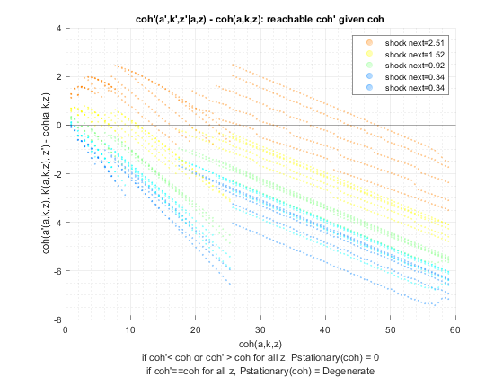 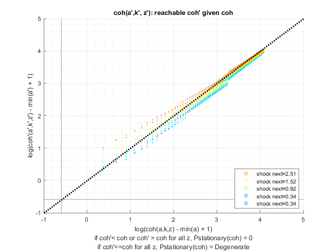 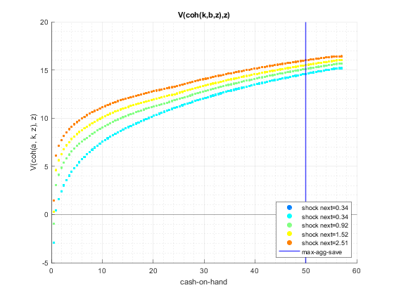 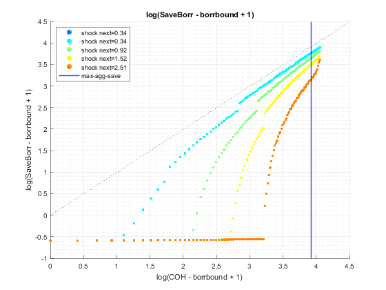 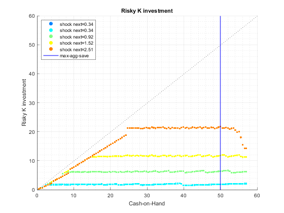 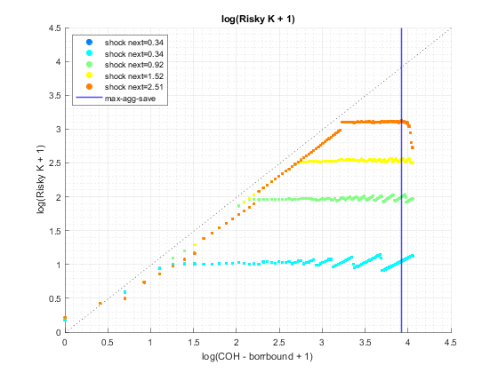 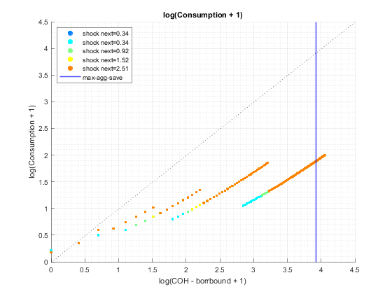  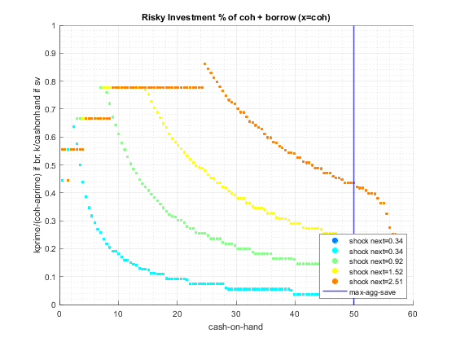
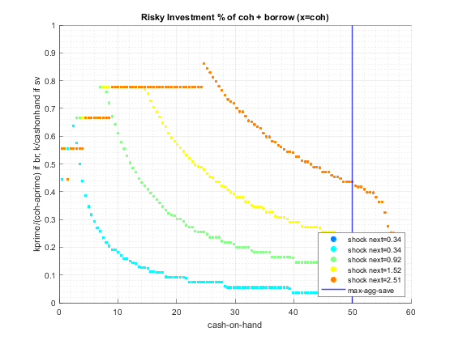  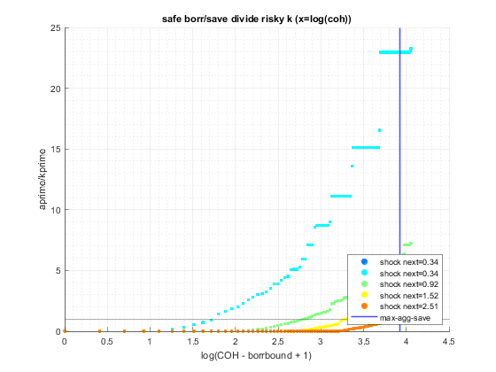 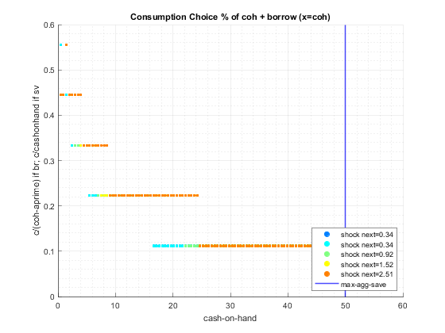 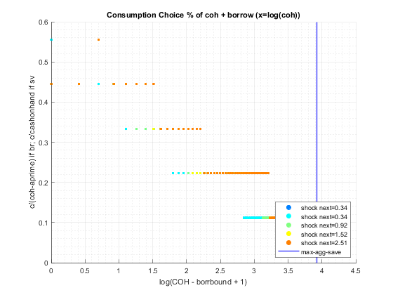
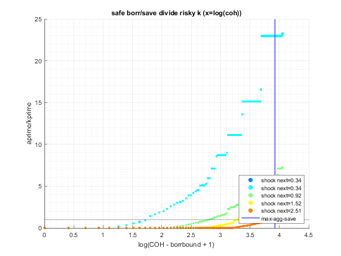 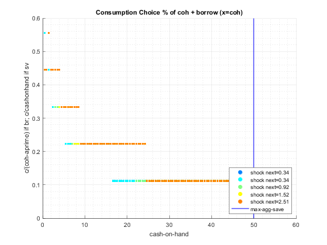 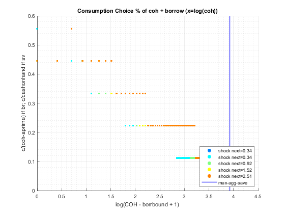 end
ans =
Map with properties:
Count: 15
KeyType: char
ValueType: any